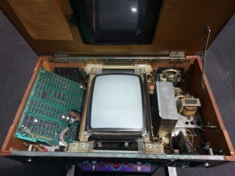
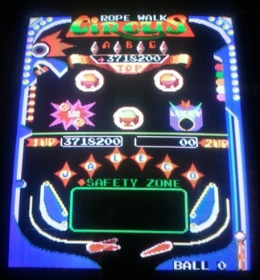
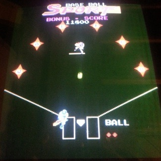

A weekend ago, I picked up a Pinbo arcade machine (made by the Japanese Leisure Company, or Jaleco, in 1984). The PCB has dual CPUs (a Zilog Z80 and a MOS 6502), as well as two dedicated sound generation chips (General Instrument AY-3-8910s).
It was in a Taito cocktail arcade cabinet that was in immaculate shape from top to bottom, so I thought to myself “if the game sucked, which is probably does because it’s video pinball, I’ll just convert it to something else like Frogger.”
However, after playing Pinbo for a couple of hours I realized there was something addictive about it that I couldn’t quite put my finger on (which is why I actually played it for a couple of hours in the first place). Now a week later, I’ve played it probably 10 times that amount and I’ve pretty much figured out why Pinbo is so awesome........it really isn’t a pinball simulator. It’s a video game with a “loose” pinball theme.

Firstly, I should point out that Pinbo has many similarities to physical pinball - it has two flippers at the bottom, and the physics in the game work exactly like a real pinball machine. I was immediately surprised as how realistic the physics and ball movement was - you can do all of the tricks you normally do such as slow a ball down by balancing it on a flipper, as well as lose a ball just because it didn’t go where you wanted it to without you having any control whatsoever. It also has targets, active bumpers, holes and saucers just like a real pinball, and they all react the way they should. The physics that the game programmer implemented in Pinbo are definitely applaudable.
However, the rest of Pinbo is NOTHING like a pinball game - it’s more like a video game.
For example, there are three bad guys that look exactly like those cute Pookas from the Dig Dug video game. They walk all over the screen when you are playing, but can’t enter the safety zone in front of your flippers. You can hit them with your balls (this squishes them and they run away), but once your safety zone erodes away over time, they will come down and try to eat your flippers if you don’t hit them first! Then you’re fucked and you end up wasting a life when you can’t prevent your ball from falling into the gutter. These bad guys make Pinbo feel like a video game - and they are the best part of Pinbo in my opinion. Even the intro screen has a cute animation that shows one of these guys getting squished and running away.
You can also get double balls, or even get a bonus that doubles your ball size (making it easier to hit stuff). Not something you could do on a real pinball machine.

There are also side games that you get if you hit all of the letters in JALECO on the screen - each side game is based on the current theme at the top of the screen (which changes as you play). The side games are timed, and you get a bonus if you solve it before the timer runs out. For example, you may have to get a basketball in a hoop, kick a soccer ball past a goalie, sink a pool ball, hit a baseball towards a specific base (shown to the right), uncover poker cards, kill a circus clown (my favorite!), or find a hidden treasure, genie or oil well. The side challenges are pretty cheesy, but you can rack up a lot of points with them.
And finally, there is continual background theme music during the game that changes when your safety zone disappears, or when you get to side games. Very much like a video game.
So, essentially, the designers of Pinbo probably thought that their focus would best be spent making a video game - they used the most common video game features (bad guys, side game challenges, double fire) and slapped them on a pinball theme. In the end, Pinbo doesn’t feel like pinball - with it’s retro 8-bit graphics and theme music, it definitely feels like a 1980s video game instead.
And that’s what makes it cool for me, since I’m not really into pinball simulators, but I love retro video games......and if you like retro arcade games like Pac-man, Dig Dug, and Donkey Kong, you’ll probably love Pinbo, since it feels like it fits into that crowd nicely ;-)
A very realistic pinball simulator from the 1980s is “Pinball Action” (Tehkan, 1985), but I just don’t like playing it. Those that do, probably hate Pinbo since it isn’t a true pinball simulator.....like this guy: http://www.emuviews.com/reviews/reviews-214.html (to each their own I guess ;-)